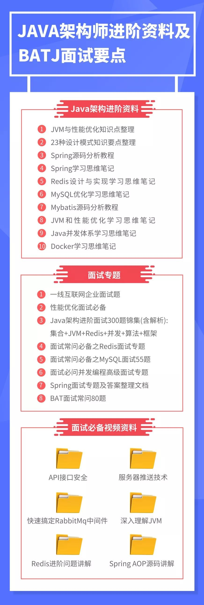

2019年最新的阿里、腾讯、百度、美团、头条等大厂技术面试题目近日被汇总整理，专家出题人分析汇总以及答案也在逐步补全中。目前该项目在GitHub上已获得超22580个Star，内容分为阿里篇、华为篇、百度篇、腾讯篇、美团篇、头条篇、滴滴篇、京东篇、MySQL篇、Redis篇、MongDB篇、ZooKeeper篇、Nginx篇、算法篇、内存篇、CPU篇、磁盘篇、网络通信篇、安全篇、并发篇。不多说了，来一起看看吧。（文末附有免费领取方式）
阿里篇
1.1.1 如何实现一个高效的单向链表逆序输出？
typedef struct node{ int data;struct node* next; node(int d):data(d), next(NULL){}}node;void reverse(node* head){ if(NULL == head || NULL == head->next){ return; } node* prev=NULL; node* pcur=head->next; node* next; while(pcur!=NULL){ if(pcur->next==NULL){ pcur->next=prev; break; } next=pcur->next; pcur->next=prev; prev=pcur; pcur=next; } head->next=pcur; node*tmp=head->next; while(tmp!=NULL){ cout<<tmp->data<<"\t"; tmp=tmp->next; }}
1.1.2 已知sqrt(2)约等于1.414，要求不用数学库，求sqrt(2)精确到小数点后10位
出题人：阿里巴巴出题专家：文景／阿里云 CDN 资深技术专家
参考答案：
* 考察点
1、基础算法的灵活应用能力（二分法学过数据结构的同学都知道，但不一定往这个方向考虑；如果学过数值计算的同学，应该还要能想到牛顿迭代法并解释清楚）
2、退出条件设计
* 解决办法
查找，如：a)high=>1.5 b) low=>1.4 c) mid => (high+low)/2=1.45 d) 1.45*1.45>2 ?high=>1.45 : low => 1.45 e) 循环到 c)
a) 前后两次的差值的绝对值<=0.0000000001, 则可退出
const double EPSINON = 0.0000000001;double sqrt2(){ double low = 1.4, high = 1.5; double mid = (low + high) / 2; while (high - low > EPSINON){ if (mid*mid > 2){ high = mid; } else{ low = mid; } mid = (high + low) / 2; } return mid;}
1.1.3 给定一个二叉搜索树(BST)，找到树中第 K 小的节点
出题人：阿里巴巴出题专家：文景／阿里云 CDN 资深技术专家
参考答案：
* 考察点
1、基础数据结构的理解和编码能力
2、递归使用
5\3 6\2 4/1
说明：保证输入的 K 满足 1<=K<=(节点数目）
树相关的题目，第一眼就想到递归求解，左右子树分别遍历。联想到二叉搜索树的性质，root 大于左子树，小于右子树，如果左子树的节点数目等于 K-1，那么 root 就是结果，否则如果左子树节点数目小于 K-1，那么结果必然在右子树，否则就在左子树。因此在搜索的时候同时返回节点数目，跟 K 做对比，就能得出结果了。
/** * Definition for a binary tree node. **/public class TreeNode { int val; TreeNode left; TreeNode right; TreeNode(int x) { val = x; }}class Solution { private class ResultType { boolean found; //是否找到 int val; //节点数目 ResultType(boolean found, int val) { this.found = found; this.val = val; } } public int kthSmallest(TreeNode root, int k) { return kthSmallestHelper(root, k).val; } private ResultType kthSmallestHelper(TreeNode root, int k) { if (root == null) { return new ResultType(false, 0); } ResultType left = kthSmallestHelper(root.left, k);//左子树找到，直接返回 if (left.found) { return new ResultType(true, left.val); }//左子树的节点数目 = K-1，结果为 root的值 if (k - left.val == 1) { return new ResultType(true, root.val); }//右子树寻找 ResultType right = kthSmallestHelper(root.right, k - left.val - 1); if (right.found) { return new ResultType(true, right.val); }//没找到，返回节点总数 return new ResultType(false, left.val + 1 + right.val); }}
1.1.4 LRU缓存机制
1.1.5 关于epoll和select的区别，以下哪些说法是正确的
1.1.6 从innodb的索引结构分析，为什么索引的 key 长度不能太长
1.1.7 MySQL的数据如何恢复到任意时间点？
……
华为篇
2.1.0 static有什么用途？（请至少说明两种）
2.1.1 引用与指针有什么区别？
2.1.2 描述实时系统的基本特性
……
百度篇
3.1.0 在函数内定义一个字符数组，用gets函数输入字符串的时候，如果输入越界，为什么程序会崩溃？
3.1.1 C++中引用与指针的区别
3.1.2 C/C++程序的内存分区
……
腾讯篇 美团篇头条篇滴滴篇京东篇MySQL篇Redis篇MongDB篇Zookeeper篇Nginx篇算法篇内存篇cpu篇磁盘篇网络通信篇安全篇并发篇

免费领取java进阶资料和最新面试题目及解析
请添加博主微信
“变强没有捷径，唯有不断学习。”